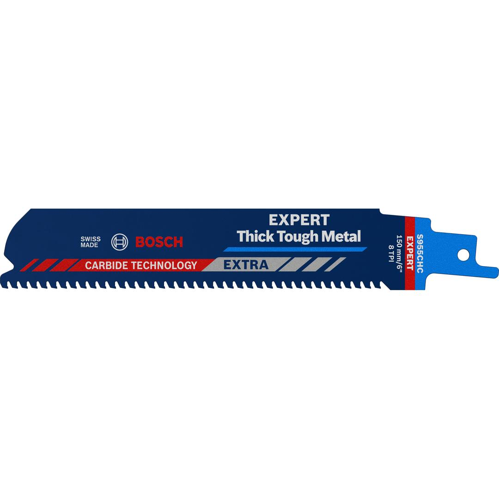
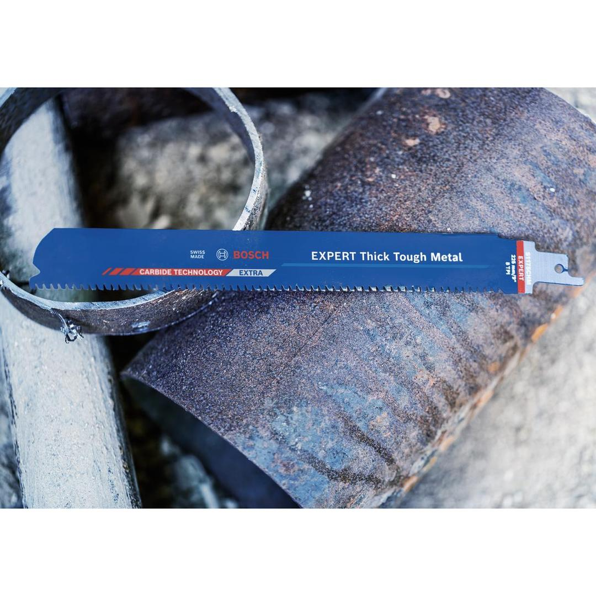
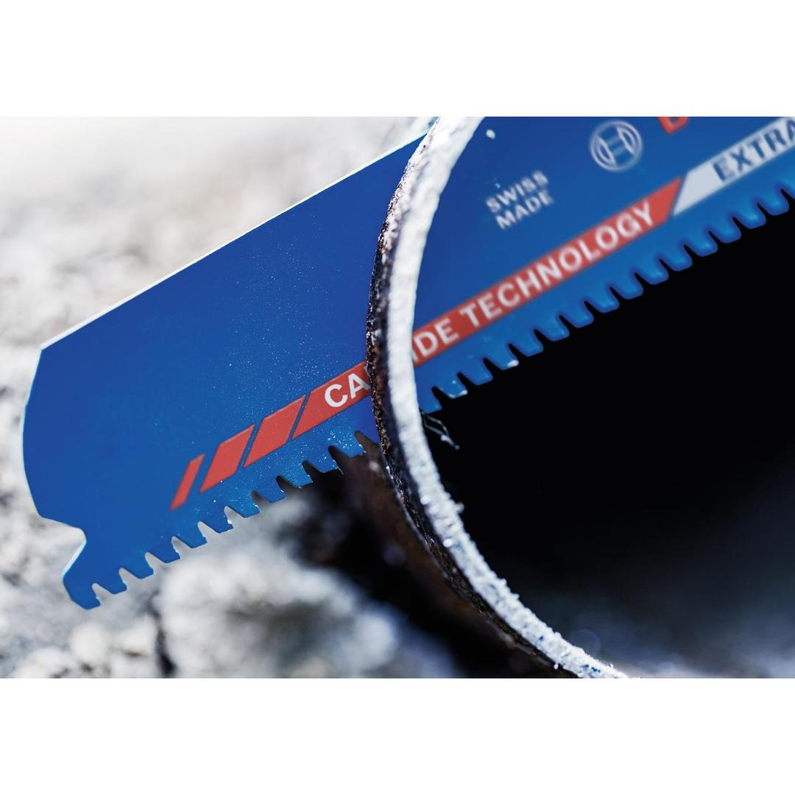
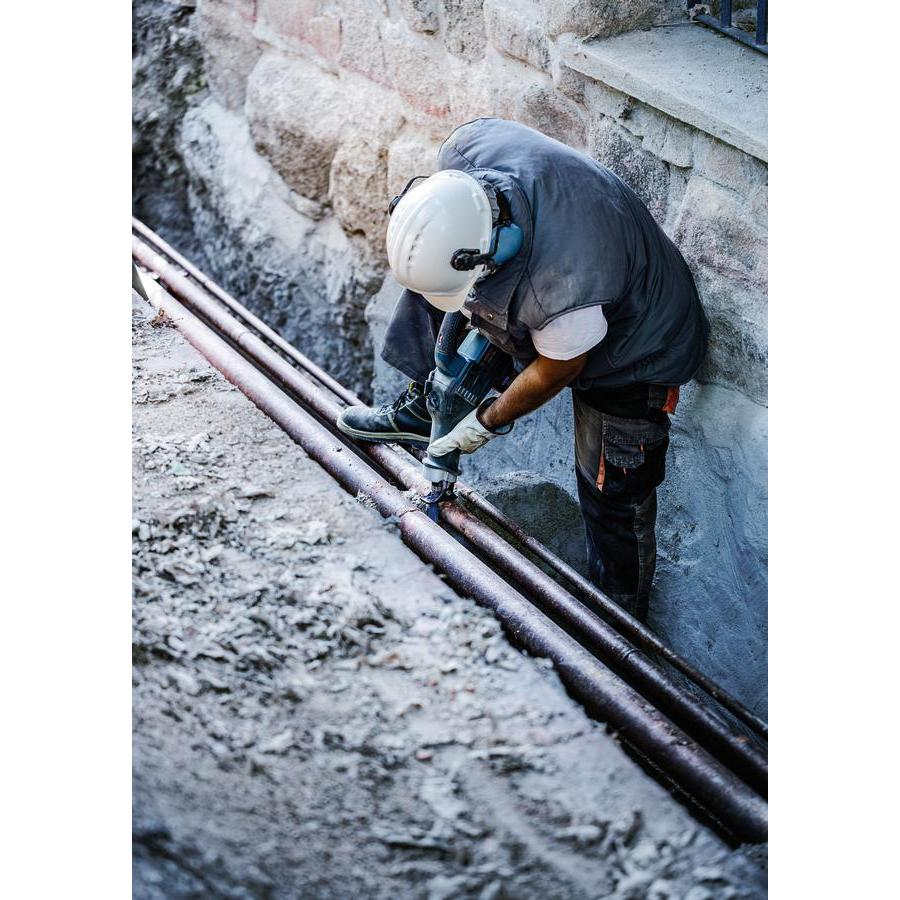
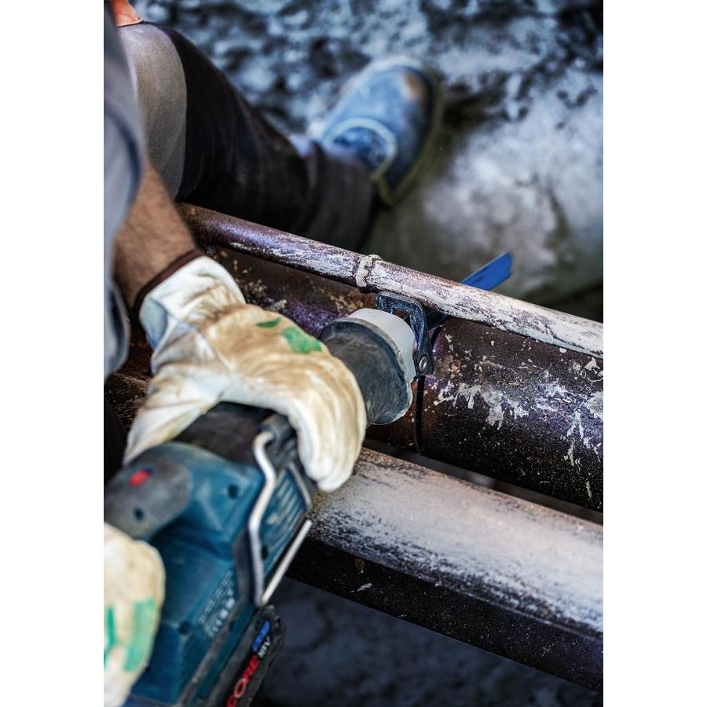
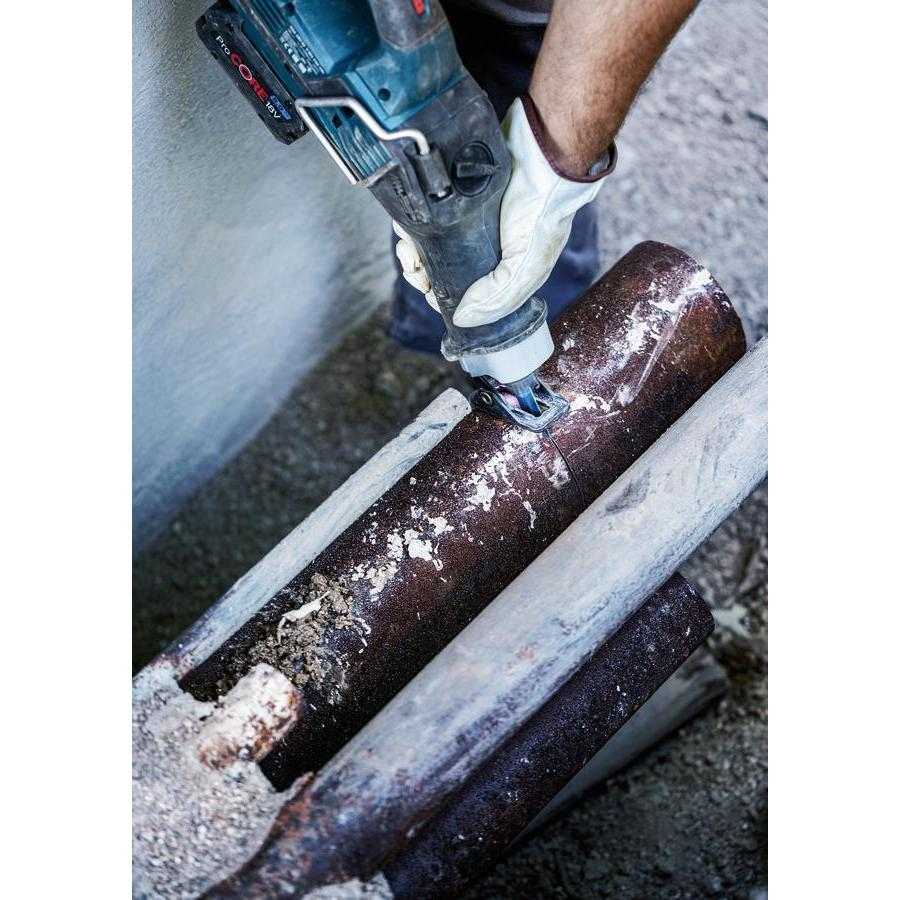
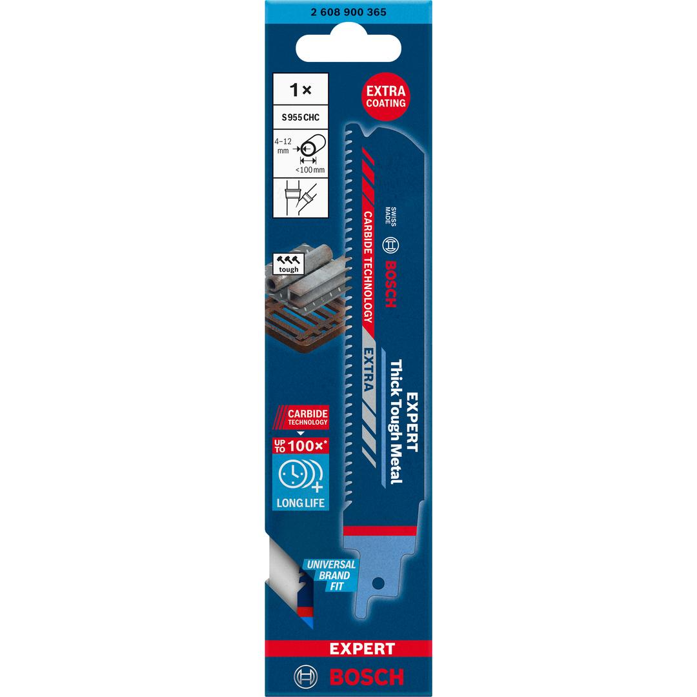

2608900365







| Body material |
HCS |
| Material |
CARBIDE |
| Material abbreviation |
CT |
| Total length, mm |
150 |
| Total length, inch |
6 |
| Height, mm |
25 |
| Thickness, mm |
1.25 |
| Tooth spacing, mm |
3 |
| Tooth pitch, TPI |
8 |
| Shank shape |
1/2" universal shank |
| Recommended material thickness min, mm |
4 |
| Recommended material thickness max, mm |
12 |
| Cut capacity max, mm |
100 |
| Packaging type |
Paper / Cardboard / Corrugated board - Packaging, pocket, with Euro hole |
| Pack quantity |
1 Pcs |
| Minimum order quantity |
1 Pcs |